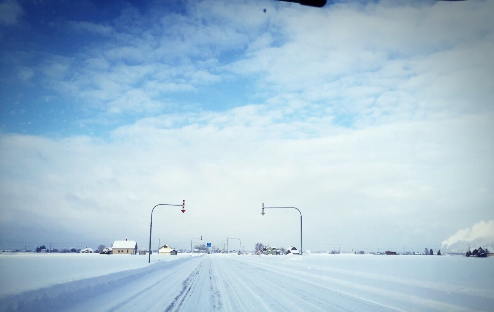

| 2016/01 14 Thu | いちご |
仕事おわりにカレーを食べてスーパーでいちご買って雑誌と本買って帰ってきて今はいちごに夢中です

見た目に似合わずいちごがすきなのです
ベリーとつく食べ物がすき
ラズベリー、ストロベリー、ラズベリー、あれラズベリー２回言っちゃったブルーベリー
似合わないものがすきだけど似合わないと分かるから避けて尚更イメージないと思われる連鎖！
この現象あるあるな気がするけどどう！！

オラ食べろよ！！

おいしいですよ、ふくおかのいちごです
正月気分が抜けてるなー完璧に、と今日の朝思ったんだけど今年は正月気分にもならずに終わったんだと気付いたよ
みんな就職だったり家庭を持ったりで昔ほど年始に友達で集まることもなくりかけてる...
わたしももうそんな歳になるのかあと自分より周りを見て実感するよねえ
スーパーや本屋さんがこんな時間までやってる東京の街って１人に優しいと思ったし、
スーパーや本屋さんが２０時には閉まるわたしの地元のような街は人間関係を深めてくれるなあと思いました！
こんなんつらつら書いてたらいちご食べ終わりました

わたしの地元旭川の正月
珍しく天気が良かったし例年より寒くなかった気がする、雪も少なかったなあ
道が広いでしょ？？
あしたはやいので寝る準備しよ！おやすみ！
コメント(1370)
2016/01/14 22:42